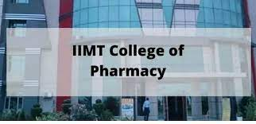

School of Pharmaceutical Sciences
About School
The School of Pharmaceutical Sciences (SoPS) was established in 2019 at IIMT University, Meerut. It offers excellent infrastructure, ICT-enabled classrooms, labs, and hands-on pharmacy training. The D. Pharmacy program is approved by the Pharmacy Council of India and provides holistic education in pharmaceutical sciences.

Programs
- Diploma in Pharmacy (D. Pharm) – 2 years with 6 months internship
Course Highlights
- Safe and accurate processing of prescriptions
- Dispensing and compounding of medicines
- Inventory management and billing
- Regulatory and pharmaceutical jurisprudence
- Patient care and clinical practices
Career Prospects
- Government and private pharmacy roles
- Medical representatives or pharmaceutical marketing
- Pharma manufacturing and quality control
- Own private pharmacy setup
Eligibility & Fee Structure
Eligibility: 10+2 (PCM/PCB) 50% (SC/ST 45%), minimum age 17 years.
Fee Structure (2-year program): Tuition Fee – ₹85,000, Book Bank – ₹1,000, NPTEL – ₹1,100, Examination Fee Total – ₹93,100